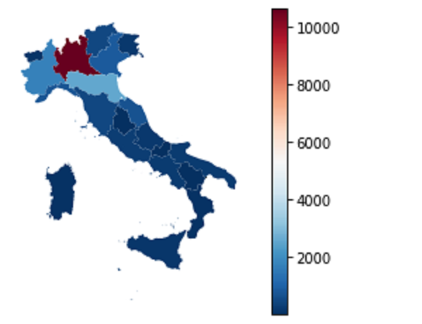
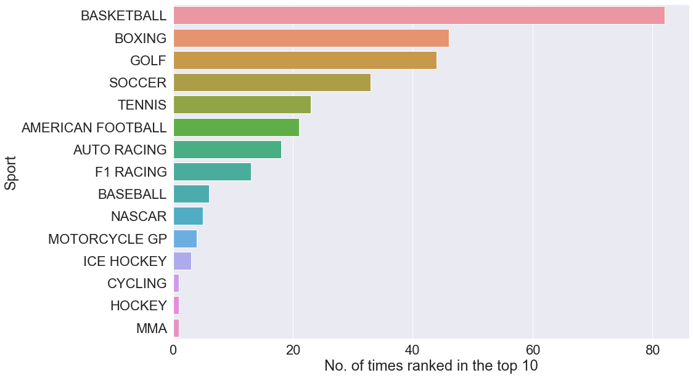

Picking a first project can be a daunting task with the vast amount of resources available, so it seemed apparent to me to choose a data source close to my heart, why not choose The Arsenal. The essence of this project is to gain some experience of data manipulation and visualisation, the dataset acquired was the results of every match played in the English Premier League from 1993 to 2019. Cleaning and manipulating the data enabled me to extract all the Arsenal fixtures, calculate each seasons points tally and plot them overtime; the final result brought up some unexpectedly interesting insights.

COVID-19 had a profound impact across almost all cultures, countries and economies after it’s outbreak in Wuhan, China and Europe became quickly entrenched in a battle with the viral infection. Italy was the epicentre of COVID-19 in Europe with thousands of people contracting the virus and as a result a significant proportion unfortunately died. With close family ties to the beautiful country and being a topical subject I investigated the spread of COVID-19 with data I discovered online and using the GeoPandas library to produce choropleth maps. These map give us greater insight into what regions were affected first, the most and the staggering growth of the virus throughout the country.
Mushrooms along with being delicious come in all shapes, sizes and characteristics with ‘cap shape’, ’gill attachment’ and ‘odour’ just to mention a few. Although even from an early age the most important property people wish to know is whether it is poisonous or not. This project attempts to answer this age-old question by using all the other aspects of the mushroom to model if it is safe to eat or not. Logistic Regression, K Nearest Neighbours and Random Forest classifying models were pitted against each other to see what model can best predict the edibility of different mushroom variants.

Being a big sports fan in general I considered the Forbes Richest Athletes dataset for my exploratory data analysis (EDA) project. When I first downloaded the dataset I set out to answer some questions I had in mind, like who has earned the most in a single year? Who has earned the most of the entire period of the dataset? What sports predominantly earn the most? And so on. Each question I made the effort to visualise in one way or another as colours, pictures and graphs provide a greater insight and to test myself to learn a new type of plot not previously tried.